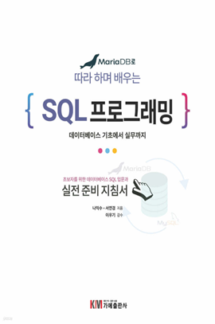

학습 목표
- 1. MariaDB의 구조 이해부터 SQL 기본기, 테이블 설계까지 단계적으로 익힐 수 있습니다.
- 2. 실습 중심의 구성으로 개발과 운영 실무에 바로 활용 가능한 데이터베이스 역량을 키울 수 있습니다.
교육 특징
-
1. 데이터 흐름을 이해하며 기초부터 다지는 체계적인 구성
MariaDB 설치부터 테이블 설계, 쿼리 작성까지 SQL의 기본 개념을 단계별로 체계화하여, 초보자도 데이터 구조와 흐름을 쉽게 이해할 수 있도록 구성
-
2. 전문 강사의 실무 경험을 바탕으로 구성된 단계별 실습 콘텐츠
데이터베이스를 실제 서비스에 적용해 본 전문 강사의 노하우를 바탕으로, 학습자가 직접 실습하며 SQL을 자연스럽게 익힐 수 있도록 구성
-
3. 실무에 바로 적용 가능한 핵심 SQL 기능 집중 학습
CRUD, 조인, 인덱스, 성능 관리, 백업 등 현장에서 자주 활용되는 기능을 중심으로 다뤄, 실무에 바로 적용 가능한 TIP 제공
교육 대상
- 1. 기업체 전 임직원
- 2. MariaDB를 처음 접하는 직장인 및 개발자
- 3. SQL과 MariaDB 활용이 필요한 실무 개발자
강의 목차
- 제1장 MariaDB 환경 구성
- 제2장 MariaDB 구조 이해
- 제3장 기본 SQL 쿼리 활용 1
- 제4장 기본 SQL 쿼리 활용 2
- 제5장 다양한 함수 활용
- 제6장 테이블 조인
- 제7장 서브쿼리 및 CRUD 활용
- 제8장 테이블 생성과 관리
- 제9장 데이터베이스 성능 관리
- 제10장 데이터베이스 백업과 복구
강사 소개
강사명
이현용
경력
서울호서전문학교 오라클데이터베이스과 겸임교수(2010~2015)
삼성멀티캠퍼스 Unix & Linux 보안실무 사외강사(2014~2016)
(유)한국오라클 Oracle 공인강의 외부강사
HBI기술연구소 사외 수석연구원(IT컨설턴트)
데이터스토리허브 대표
Amazon AWS AAI CHAMPION(AWS 공인 강사)
기업 출강 기술 교육 (삼성전자, 롯데, 신한은행, LGcns, 한전KDN, 대검찰청, 국세청 등..다수)
삼성멀티캠퍼스 Unix & Linux 보안실무 사외강사(2014~2016)
(유)한국오라클 Oracle 공인강의 외부강사
HBI기술연구소 사외 수석연구원(IT컨설턴트)
데이터스토리허브 대표
Amazon AWS AAI CHAMPION(AWS 공인 강사)
기업 출강 기술 교육 (삼성전자, 롯데, 신한은행, LGcns, 한전KDN, 대검찰청, 국세청 등..다수)
참고 도서

도서명
MariaDB로 배우는 따라 하며 배우는 SQL 프로그래밍
저자명
나익수, 선연경
도서소개
SQL 프로그래밍 학습을 위한 새로운 접근 방법! 문법만을 설명하지 않는다. 이론만을 설명하지 않는다.
실무를 근간으로 하는 다양한 실습 예제를 수록하였다. MariaDB 설치부터 기초적인 실무 기능까지 따라 하며 데이터베이스 SQL 프로그래밍을 익힐 수
있는 지침서로 Python 프로그램에서 MariaDB 사용할 수 있고 MySQL 사용자도 학습이 가능하다.